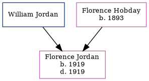

Florence Jordan 1919 - 1919
[ Home ] | [ Calendar ] | [ Surnames Index ] | [ Errors ] | [ Family History ]The child of William Jordan and Florence Hobday, Florence Jordan, the second cousin once-removed on the mother's side of Nigel Horne, was born in Thanet, Kent, England in 19191.
She died on the same day.
Parents
- Florence Evelyn was born in 1893
Citations
- England & Wales, Birth Index: 1916-2005 Online publication - Provo, UT, USA: The Generations Network, Inc., 2008.Original data - General Register Office. England and Wales Civil Registration Indexes. London, England: General Register Office. © Crown copyright. Published by permission of the Cont
Family Tree
Map
Generated by ged2site. Last updated on Jul 3, 2024
Known Issues
Death date (1919) has no citations